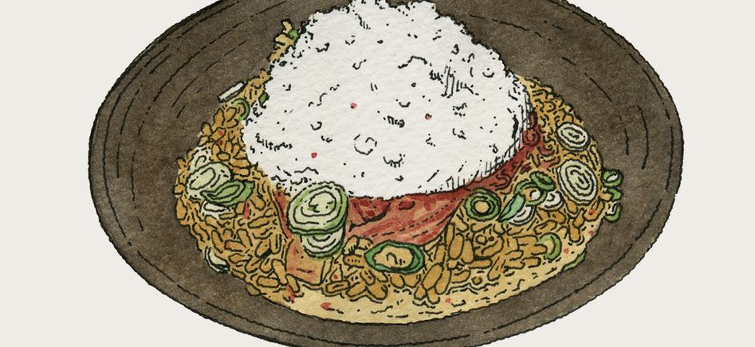

Home
Kimchi Risotto, Poached Egg & Sesame Oil

Description
One of the everyday dishes in Korea, kimchi is also a popular ingredient for other dishes, such as kimchi fried rice, kimchi stew and stir-fried pork. The kimchi risotto is a twist on a delicious classic ‘bokkeum bab’, which is a kimchi fried rice. This special recipe from Chef Joo Won is spicy, creamy and also delicious.
Ingredients (4 servings)
- 200g well fermented Kimchi (keep the juice), finely chopped.
- Sugar, good pinch to sauté with kimchi
- 60g butter
- ½ medium sized onion, diced into small pieces (0.5cm or less)
- 200g risotto rice
- 2lt light chicken stock (once this is all used, can use boiling water if extra liquid is needed)
- 60g cheddar cheese, grated
- 50g Parmigiano Reggiano, grated
- Salt and pepper
- Vegetable Oil
- Olive oil
- Sesame oil
- Extra parmesan to grate on top of the dish
- 4 organic hen eggs
- Spring onion, finely sliced
Steps
Preparation
- Poach the eggs and then keep them in warm water
- Drain the kimchi of the kimchi juice, keeping about 50ml of the liquid for later (if you don't have kimchi juice later it is fine without)
- Fry the kimchi in a hot pan with vegetable oil. Add a good pinch of sugar to give a nice caramelised flavour, then set to one side.
- Bring the chicken stock up to a simmer before you start cooking rice - ensure that it is constantly simmering during cooking.
Making the Dish
- Heat a pan to medium temperature, add half of the butter and a little drizzle of olive oil. Add the onion to the pan and sweat slowly so that it softens but does not brown.
- Once the onion is soft, add the rice with a pinch of salt and cook for 1 minute. Add more oil if necessary.
- Ladle in a good amount of simmering chicken stock (about 5 ladles) and stir the rice continuously. The most important part of cooking the risotto is that the rice and stock bubble continuously, so that the rice can be cooked properly without becoming stodgy.
- Continue to add the simmering stock, a ladleful at a time whenever the rice becomes dry.
- Stir well continuously for about 12 mins.
- Add kimchi juice to your taste and stir.
- Add the fried kimchi and cook for a further 2 minutes. The rice should be nearly at an al dente stage - you can continue to add stock, but a little less at a time.
- Lower the heat or move the pan away from the centre of the stove so that you can have better control of the last stages of the risotto. Keep tasting it to make sure that the rice is cooked to your preference.
- Put the pan on the side of the stove and leave to rest for about a minute. Add the remaining butter, cheeses and a small pinch of salt and pepper. Beat thoroughly to emulsify the cheese and butter into the risotto. Move your pan of risotto in and away from the heat to control the temperature. Check the texture and flavour, then season again if needed.
- Place risotto into a bowl. Lay a poached egg in the middle, sprinkle with a good amount of extra parmesan and spring onion, then finish with a drizzle of sesame oil. Serve with fresh kimchi on the side for additional garnish.
Recipe by Chef Joon Won
Chef Joo Won is originally from Busan, Korea. He studied Le Cordon Bleu Grand Diploma cuisine & pastry in London. He was a part of the opening team of Galvin at Windows as chef de partie and he became Head Chef in 2013. Joo developed dishes showing gentle Korean touches in a very smart way, not over taking traditions or deviating from classic French style but instead harmonising it by giving a depth and interests to the flavours. In Aug 2020, after 15 years of service, Joo left Galvin at Windows and is looking forward to establishing his own ventures.
Illustration source: @thibaudherem